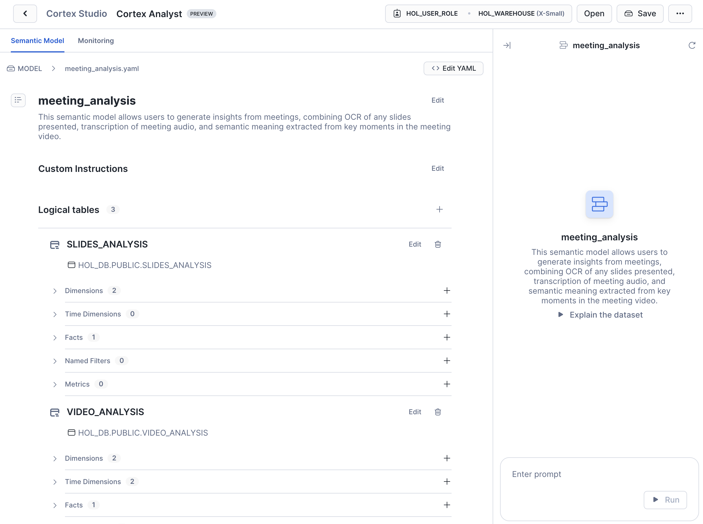
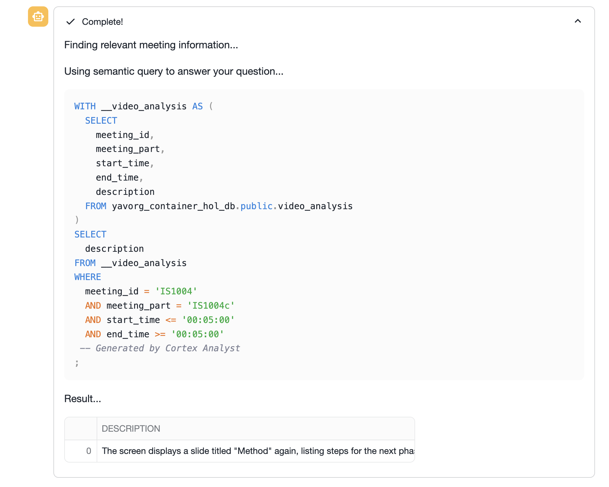

Troves of enterprise data exists as video and audio, but its utility has been limited due to the difficulty of processing it to extract insights. That barrier to entry has rapidly crumbled in the last few years, with the advances of AI models that enable cheap and fast Optical Character Recognition (OCR) and Automatic Speech Recognition (ASR), as well as powerful Vision Language Models (VLMs), able to extract meaning and grounding data from video.
In this Quickstart, we will employ all three techniques to analyze meeting video to extract insights. We are using the AMI Corpus, which is a multi-modal dataset of 100s of hours of simulated scenario meetings in which particpants play different roles in a design team, taking a design project from kick-off to completion over the course of a day. The same technques shown here are broadly applicable to other meeting video, especially when valuable information is displayed on-screen, such as presentation slides or demos.
Preqrequisites
- Basic understanding of Snowflake and containers.
- A Snowflake Account
- Installation of Snowflake CLI
- Git
- Docker Desktop
- Hugging Face account and Access Token for downloading models
What You Will Build
You will build a multi-step pipeline that uses Snowflake Cortex AI for OCR and ASR, and VLM deployed on Snowpark Container Services to extract structured data from meeting video. You'll store the output from all three models into structured Snowflake tables and build a simple chatbot allowing you to use language to generate rich analytical queries. You will be able to assess meeting effectiveness, identify decision points, and extract action items—directly within the AI Data Cloud.

What You Will Learn
You will gain hands-on experience with:
- Cortex
AI_TRANSCRIBEfor ASR - Cortex
PARSE_DOCUMENTfor OCR - Snowpark Container Services (SPCS) for loading the Qwen2.5-VL large vision model from Hugging Face and running online inference
Snowpark Container Services and Snowflake Cortex AI are two of the major components that are utilized within this Quickstart. Below is an overview of them.
Overview of Snowpark Container Services
Snowpark Container Services is a fully managed container offering designed to facilitate the deployment, management, and scaling of containerized applications within the Snowflake ecosystem. This service enables users to run containerized workloads directly within Snowflake, ensuring that data doesn't need to be moved out of the Snowflake environment for processing. Unlike traditional container orchestration platforms like Docker or Kubernetes, Snowpark Container Services offers an OCI runtime execution environment specifically optimized for Snowflake. This integration allows for the seamless execution of OCI images, leveraging Snowflake's robust data platform.

Overview of Cortex AI
Snowflake Cortex AI enables you to quickly analyze unstructured data and build generative AI applications using fully managed LLMs, RAG and text-to-SQL services. Enable multiple users to use AI services with no-code, SQL and REST API interfaces.

Create Snowflake Account
Log into Snowflake using your unique credentials if you have a Snowflake account.
For this guide, you will only need Snowflake's Standard Edition on AWS. You may want to select Enterprise to try out advanced features such as Time Travel, materialized views, or Failover.
Choose US West (Oregon) for the AWS Region and log in.
Set up SQL Environment
- Git clone the Quickstart's repo to your local machine.
- To prepare your Snowflake environment, in Snowsight, create a SQL file by clicking on + Create, then SQL File.
- Name the file
run.sqland copy the contents run.sql from the cloned repository

Install Snowflake CLI
Install the Snowflake CLI. Snowflake CLI can be used to upload the video and audio files to a Stage, check resources, and push container images to the Image Registrykk.
Use Snowsight's Connect a Tool to configure Snowflake CLI to access your Snowflake account. Viewing Account Details and then Config File will provide you with the .toml file necessary to configure Snowflake CLI to connect to your account. Add the following modified for your account to your snow CLI config file (e.g. ~/.snowflake.config.toml):
default_connection_name = "hol" -- sets the below connection to be implicitly used
[connections.hol]
account = "SFSEHOL-SUMMIT25_UNSTR_DATA_PROCESSTEST_BCHXEI" -- from Connection Tool
user = "<username>" -- update username
password = "<password>" -- update password
role = "container_user_role" -- update from Quickstart
warehouse = "hol_warehouse"
database = "hol_db"
schema = "public"
Copy the above contents into config.toml in the Snowflake CLI configuration directory (e.g. ~/.snowflake/config.toml)
Verify SnowCLI is correctly configured by running:
snow connection listsnow connection test --connection holsnow connection testto verify the default value
+-----------------------------------------------------------------------------------------+
| key | value |
|-----------------+-----------------------------------------------------------------------|
| Connection name | hol |
| Status | OK |
| Host | SFSEHOL-SUMMIT25_UNSTR_DATA_PROCESSTEST_BCHXEI.snowflakecomputing.com |
| Account | SFSEHOL-SUMMIT25_UNSTR_DATA_PROCESSTEST_BCHXEI |
| User | USER |
| Role | CONTAINER_USER_ROLE |
| Database | HOL_DB |
| Warehouse | HOL_WAREHOUSE |
+-----------------------------------------------------------------------------------------+
Run Common Setup
Execute the first section of the run.sql file labeled with the comment COMMON SETUP:
- Create the
hol_user_roleRole,hol_dbDatabase, andhol_warehouseWarehouse which we will use to run subsequent steps. - To use Snowpark Container Services, we'll create the
hol_compute_poolCompute Pool, which provides computing resources to run our containerized Service. - We'll also need to enable our Service to reach external sites such as Hugging Face and PyPI, so we create the
dependencies_access_integrationExternal Access Integration. Snowflake accounts are secure by default and do not allow external access. - We create the
hol_db.public.repoImage Repository for storing container images - Finally, we create Stages
@videoand@modelfor storing files used in later stages
Upload Files to Stage
Our application will process video and audio files that are stored on a Snowflake Stage. We'll need to first upload the video and audio files from the Github repo to our Snowflake account.
Using the Snow CLI, list the Stage you previously created
$ snow stage list
+---------------------------------------------------------------------------------------------------------------------------------------------------------+
| | | | | | | | | | | | | notifi | | | | |
| | | databa | | | has_cre | has_en | | | | | | cation | storage | | owner_r | direct |
| create | | se_nam | schema | | dential | crypti | | commen | | | | _chann | _integr | endpoi | ole_typ | ory_en |
| d_on | name | e | _name | url | s | on_key | owner | t | region | type | cloud | el | ation | nt | e | abled |
|--------+--------+--------+--------+-----+---------+--------+---------+--------+--------+---------+-------+--------+---------+--------+---------+--------|
| 2025-0 | VIDEOS | HOL_DB | PUBLIC | | N | N | ACCOUNT | | None | INTERNA | None | None | None | None | ROLE | Y |
| 5-29 | | | | | | | ADMIN | | | L NO | | | | | | |
| 15:21: | | | | | | | | | | CSE | | | | | | |
| 23.957 | | | | | | | | | | | | | | | | |
| 000-07 | | | | | | | | | | | | | | | | |
| :00 | | | | | | | | | | | | | | | | |
+---------------------------------------------------------------------------------------------------------------------------------------------------------+
Upload the contents of the videos directory and chatbot directories from cloned repo the Stage:
$ snow stage copy --recursive ./videos @hol_db.public.videos
$ snow stage copy --recursive ./chatbot @hol_db.public.model
List the contents of the Stage
$ snow stage list-files @hol_db.public.videos
+-------------------------------------------------------------------------------------------------------------------------------------------+
| name | size | md5 | last_modified |
|-------------------------------------------------------------+----------+----------------------------------+-------------------------------|
| videos/amicorpus/IS1004/audio/IS1004a.Mix-Lapel.mp3 | 12748652 | f9ee1bfce574d6ec1de89717465ebf3b | Fri, 30 May 2025 22:33:00 GMT |
| videos/amicorpus/IS1004/audio/IS1004c.Mix-Lapel.mp3 | 36222956 | 6c25066bfdecf7db3a302c7a43f6173b | Fri, 30 May 2025 22:32:57 GMT |
...
+-------------------------------------------------------------------------------------------------------------------------------------------+
Meeting Source Setup
Execute the two lines in run.sql that set the meeting_id and meeting_part variables. This will determine which video, audio, and image files you just uploaded will be used by subsequent analysis steps. This should match files that you uploaded to the Stage.
Build Docker Container
In your downloaded repo, navigate to the video_analysis directory.
Using the Snow CLI, list your Image Registry:
$ snow spcs image-repository list
+---------------------------------------------------------------------------------------------------------------------------------------------------------+
| created_on | name | database_name | schema_name | repository_url | owner | owner_role_type | comment | encryption |
|----------------------------+------+---------------+-------------+----------------------------+--------------+-----------------+---------+---------------|
| 2025-05-29 | REPO | HOL_DB | PUBLIC | sfsehol-summit25-unstr-dat | ACCOUNTADMIN | ROLE | | SNOWFLAKE_SSE |
| 15:21:19.834000-07:00 | | | | a-processtest-bchxei.regis | | | | |
| | | | | try.snowflakecomputing.com | | | | |
| | | | | /hol_db/public/repo | | | | |
+---------------------------------------------------------------------------------------------------------------------------------------------------------+
Get the Image Registry URL
$ snow spcs image-repository url repo
sfsehol-summit25-unstr-data-processtest-bchxei.registry.snowflakecomputing.com/hol_db/public/repo
Build the Docker Container The syntax of this command is docker build --rm --platform linux/amd64 -t where repository_url is from the previous command and image_name is process_video:latest
$ docker build --rm --platform linux/amd64 -t sfsehol-summit25-unstr-data-processtest-bchxei.registry.snowflakecomputing.com/hol_db/public/repo/process_video:latest .
<...build output...>
$ docker images
REPOSITORY TAG IMAGE ID CREATED SIZE
sfsehol-summit25-unstr-data-processtest-bchxei.registry.snowflakecomputing.com/hol_db/public/repo/process_video latest 8a051200cd1d About an hour ago 16.5GB
Login to your Repository with Docker using Snow CLI
$ snow spcs image-registry login
Login Succeeded
Push Container to Registry
Now that you've built the container, we need to upload or Push the container image to the registry. The Snowpark Container Services (SPCS) Container Registry is a secure, Snowflake-managed repository for storing and versioning container images. It enables developers to seamlessly build, deploy, and run containerized applications within the Snowflake Data Cloud.
$ docker push sfsehol-summit25-unstr-data-processtest-bchxei.registry.snowflakecomputing.com/hol_db/public/repo/process_video:latest
List the Image in the repository:
$ snow spcs image-repository list-images repo
+---------------------------------------------------------------------------------------------------------------------------------------------------------+
| created_on | image_name | tags | digest | image_path |
|---------------------------+---------------+--------+----------------------------------------------------------+-----------------------------------------|
| 2025-05-30 15:11:34-07:00 | process_video | latest | sha256:077c6883533f7d384b0e6594038895995de6f5470892cb15e | hol_db/public/repo/process_video:latest |
| | | | 51e4afcea611a35 | |
+---------------------------------------------------------------------------------------------------------------------------------------------------------+
Execute Containerized Job
The image you built and pushed to SPCS Image Repository contains the vLLM runtime which provides scalable hosting for large AI models with support for multiple GPU instances. It is pre-configured to load the Qwen2.5-VL-7B-Instruct VLM from Hugging Face. This model excels at:
- Visual understanding: object recognition, but also analyzing slides, charts, and graphics
- Understanding long videos and capturing events: for videos of over 1 hour, complete with the ability to capture events and pinpoint relevant video segments
- Generating structured outputs: returning results in structured formats to be used for Snowflake analytical processing
We will use SPCS Jobs to run the model against meeting videos with the following prompt:
Provide a detailed description of this meeting video, dividing it in to sections with a one sentence description, and capture the most important text that's displayed on screen. Identify the start and end of each section with a timestamp in the ‘hh:mm:ss' format. Return the results as JSON"
The resulting JSON will be parsed into a structured table called video_analysis.
Follow these steps in the VIDEO ANALYSIS section of run.sql:
- (Optional) Dun the
DROP SERVICE IF EXISTScommand if you are executing the Job repeatedly to clean up previous runs - Run the
EXECUTE JOB SERVICEcommand to run the Job
- Replace the
<image>:<version>section with the image path from the previous step - Replace
<your_hf_token>with you Hugging Face token to download the model - The exact meeting the model will analyze have already been preset when you set the
$meeting_idand$meeting_partSQL variables earlier - The command is configured to run asynchronously, so it should complete within a few seconds, however the underlying Job may take 10+ minutes to complete.
- To monitor the Job status and progress, use the Jobs tab of the Services & jobs area in Snowsight
- Select the
PROCESS_VIDEOJob to see the status of the containerized workload. You can also use the Logs tab to see the log lines being emitted by the model
- Run the
SELECTstatement in thevideo_analysistable when the Job completes to see the model's anslysis of the meeting. The output should look similar to the below:
+------------+--------------+----------------------------------------------+------------+----------+--------------------------------------------------------------------------------------------------------------------------------------------------------------------------------------------------------------------------------------------------------------------------------------------------------------------------+
| MEETING_ID | MEETING_PART | VIDEO_PATH | START_TIME | END_TIME | DESCRIPTION |
+------------+--------------+----------------------------------------------+------------+----------+--------------------------------------------------------------------------------------------------------------------------------------------------------------------------------------------------------------------------------------------------------------------------------------------------------------------------+
| IS1004 | IS1004c | /videos/amicorpus/IS1004/video/IS1004c.C.mp4 | 00:00:00 | 00:00:21 | The video opens with a group of four individuals entering a room equipped with a large screen displaying a presentation titled "Conceptual Design Meeting." The room is set up for a collaborative discussion, with a table covered in papers and a laptop. The individuals sit down and begin engaging in conversation. |
| IS1004 | IS1004c | /videos/amicorpus/IS1004/video/IS1004c.C.mp4 | 00:00:21 | 00:01:45 | The group continues their discussion, focusing on the content displayed on the screen. The screen shows a slide titled "Method" with bullet points about user preferences and constraints. The individuals take notes and discuss the information presented. |
| IS1004 | IS1004c | /videos/amicorpus/IS1004/video/IS1004c.C.mp4 | 00:01:45 | 00:03:09 | The screen transitions to a slide titled "Findings," listing various aspects such as user preferences, device requirements, and design constraints. The group discusses these findings, taking notes and sharing insights related to the design process. |
| IS1004 | IS1004c | /videos/amicorpus/IS1004/video/IS1004c.C.mp4 | 00:03:09 | 00:04:58 | The screen changes to a slide titled "Interface Concept," which includes a diagram and text discussing the design model and technology. The group engages in a detailed discussion about the interface concept, with one individual standing and pointing at the screen while others take notes. |
| IS1004 | IS1004c | /videos/amicorpus/IS1004/video/IS1004c.C.mp4 | 00:04:58 | 00:06:57 | The screen displays a slide titled "Method" again, listing steps for the next phase of the project. The group continues their discussion, focusing on the outlined steps and making decisions based on the information presented. |
+------------+--------------+----------------------------------------------+------------+----------+--------------------------------------------------------------------------------------------------------------------------------------------------------------------------------------------------------------------------------------------------------------------------------------------------------------------------+
Next, we will utilize Snowflake Cortex AI's PARSE_DOCUMENT to carry out Optical Character Recognition (OCR) of the slide content presented in the meeting. The function can extract full-text and table content from slides. We will employ layout mode to maintain document structure via semantic chunking.
In your Snowsight run.sql file, go to the section labeled OCR:
- Create the
slides_analysistable - Run the
INSERTstatement, which invokesPARSE_DOCUMENTin layout mode on each slide image (JPG) presented in the meeting - List the contents of the table, it should contain a row for each slide. Note that the recognized text will still contain a number of irrelevant word fragments and other artifacts, since the input images frequently include the full desktop of the presenter, not just the slide content. This will be addressed in the subsequent analysis.
+------------+--------------+------------------------------------------------------+------------------------------------------------------------------------------------------------------------------------------------+---------+
| MEETING_ID | MEETING_PART | IMAGE_PATH | TEXT_CONTENT | |
+------------+--------------+------------------------------------------------------+------------------------------------------------------------------------------------------------------------------------------------+---------+
| IS1004 | IS1004c | amicorpus/IS1004/slides/IS1004c.1.34__72.51.jpg | werPoint- [Agenda2]Window Help 107% 2) »i Arial 18 18 Design New Slide 18 Real Reaction al Design meeting Agenda | |
| IS1004 | IS1004c | amicorpus/IS1004/slides/IS1004c.116.06__135.99.jpg | werPoint - [Agenda2]Window Help X107% 2) »i Arial 18 Design New Slide Real Reaction Real Reaction al Design meeting by: S. Marcel |
| IS1004 | IS1004c | amicorpus/IS1004/slides/IS1004c.1219.96__1490.04.jpg | 1)lide Shov Window 107% 2)»i Arial 18 # Method # For the Power Source: Solar Cells and Batteries | |
+------------+--------------+------------------------------------------------------+------------------------------------------------------------------------------------------------------------------------------------+---------+
In this section we will use Snowflake Cortex AI's AI_TRANSCRIBE to carry out Automatic Speech Recognition (ASR) and transcribe the meeting audio. Cortex AI Transcribe provides high-quality transcription of audio files using the latest AI models, allowing us to easily integrate transcription into our application. We will use Cortex to transcribe the audio into text and then add it into our database.
Note: AI_TRANSCRIBE is currently a Snowflake Preview feature. Contact your account representative to obtain access.
In your Snowsight run.sql file, go to the section labeled SPEECH RECOGNITION:
- Create the
speech_analysistable - Run the
INSERTstatement, which invokesAI_TRANSCRIBEon the meeting audio - List the contents of the table, it should contain a single entry for each audio file, similar to this:
+------------+--------------+------------------------------------------------------+--------------------------------------------------------------------------------------------------------------------------------------------------+
| MEETING_ID | MEETING_PART | AUDIO_PATH | TEXT_CONTENT |
+------------+--------------+------------------------------------------------------+--------------------------------------------------------------------------------------------------------------------------------------------------+
| IS1004 | IS1004c | @videos/amicorpus/IS1004/audio/IS1004c.Mix-Lapel.mp3 | Okay, good afternoon. Hope you have good lunch. Yeah, we had falafel. Oh, nice. And you? Uh, yes, I had something similar, but non-vegetarian... |
+------------+--------------+------------------------------------------------------+--------------------------------------------------------------------------------------------------------------------------------------------------+
By completing the previous steps, we now have 3 distinct data sources about the meeting (semantic analysis of video, audio transcription, OCR of slides), all extracted from a single video file. Lets now turn to the analysis part, where we leverage all three to gain insights into the meeting. We will construct a conversational bot that lets us use language to query the table data generated by the previous steps.
Cortex Analyst
Snowflake Cortex Analyst allows users to ask questions in natural language and receive direct answers without writing SQL. The structured data we have extracted so far contains columns identifying the meeting part and time stamps. With tweaks to model prompts, additional structured columns can be added to our analysis.
To use Cortex Analyst, we create a semantic model which allows us to map our domain specific terminology (meeting, video, transcript, slides, etc) to database schemas and add contextual meaning. For example, when a user asks a query about a specific time in the meeting, we can establish a link with the start_time and end_time columns in our video_analysis table. This mapping helps Cortex Analyst understand the user's intent and provide accurate answers.
- Navigate to the Cortex Analyst area in Snowsight under Snowflake AI & ML Studio
- Specify
hol_user_roleandhol_warehousewhen prompted - Select the
meeting_analysis.yamlfile from the@modelstage
- You should now see the semantic model that we have pre-defined over our three tables 
- You can use the chat view to test some queries against the data, the Verified Queries section provides a good starting point.

Explore the model and verified queries that have been pre-defined. Test out any questions you'd like to ask the model and define verified queries when the built text-to-SQL engine is unable to automatically infer the right SQL.
Streamlit Chatbot
In this final step, we'll put all the pieces we built so far together into a single LLM-powered chatbot, allowing us to be able to use natural language to learn about the meeting.
- Navigate to Streamlit under Projects in Snowsight
- Create a new Streamlit app called
meeting_chatusinghol_dbandhol_warehouse
- In the Packages menu, include
snowflake-ml-pythonin the list of necessary packages - Replace the
streamlit_app.pywith this file from the repo - Run the Streamlit app
You should now be able to as the chatbot questions about the meeting. The relevant rows returned by Cortex Analyst are parsed into the LLM's context, which is able to summarize them into clear and accurate answers. 
Expanding the analyst section, you will be able to see the underlying queries being executed against the parsed data. 
If a question you ask is not understood by Cortex Analyst, the chatbot will return some suggestions. You can edit the semantic model's verified queries (see previous step) to allow the model to uderstand more custom questions. 
In the run.sql file, run the steps in the CLEANUP section. Ensure the following are removed in order to not incur charges:
meeting_chatStreamlit apphol_dbDatabasehol_warehouseWarehousehol_compute_poolCompute Pool
Overview
In this quickstart, you used Optical Character Recognition (OCR), Automatic Speech Recognition (ASR), as well as powerful Vision Language Models (VLMs) to extract meeting insights from video files.
What You Learned
- Creating a Snowpark Container Service based application that hosts an AI model
- Calling Snowflake Cortex AI functions.
- Using Cortex Analyst with semantic models
Resources
- Github repo Snowflake-Labs/sfguide-extracting-insights-from-video-with-multimodal-ai-analysis
- Snowpark Container Services Documentation
- Snowflake Cortex AI documentation
- Getting Started with Cortex Analyst Quickstart